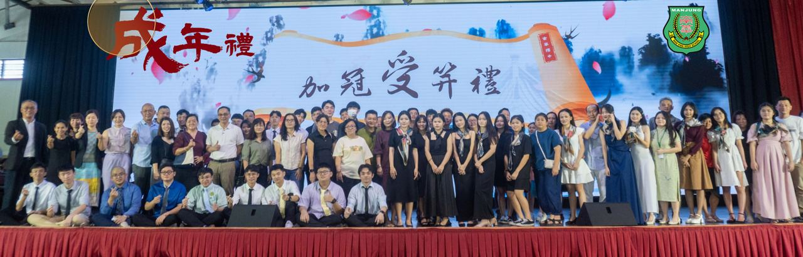
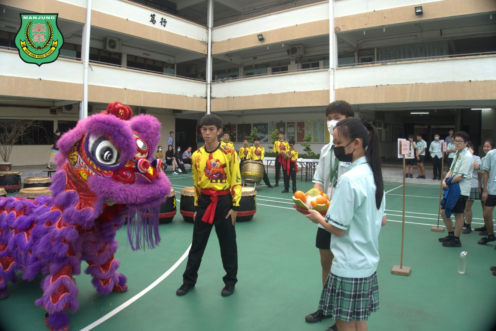
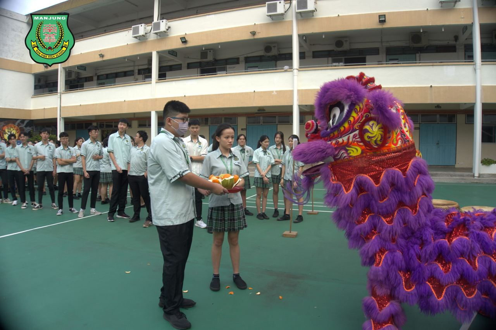
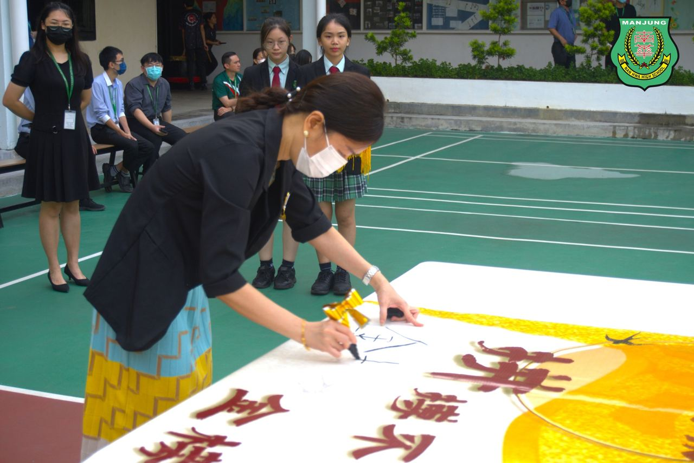
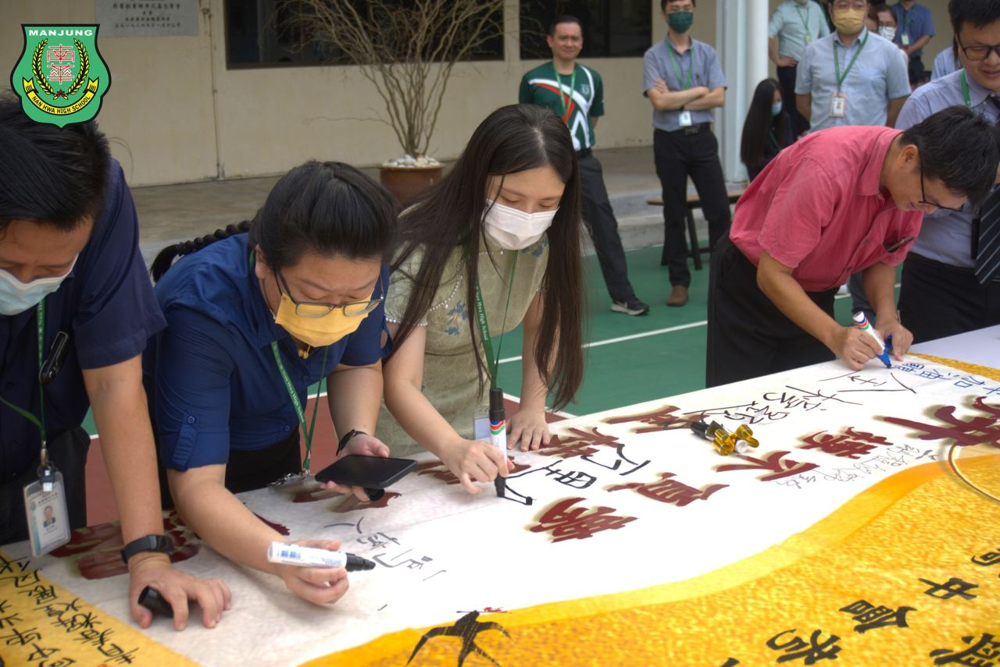
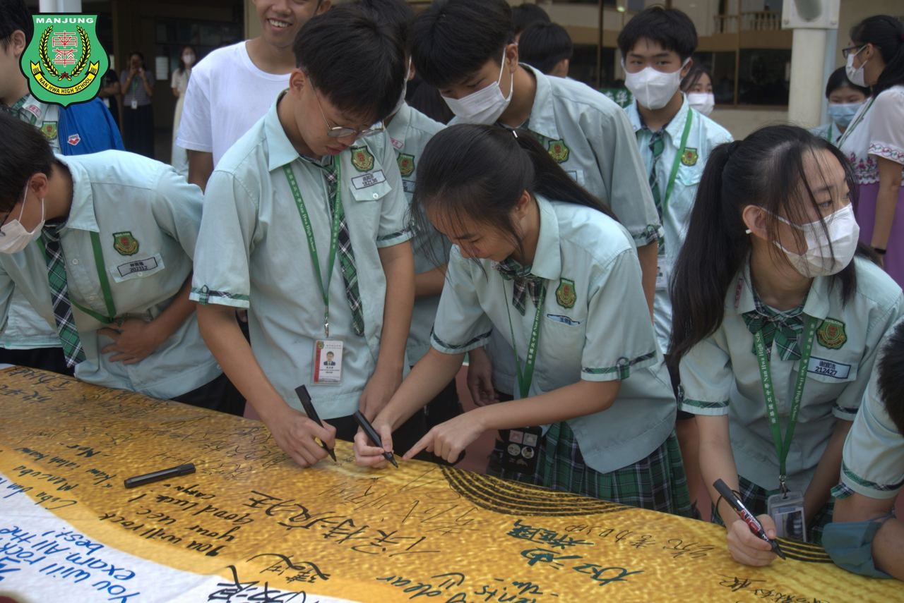
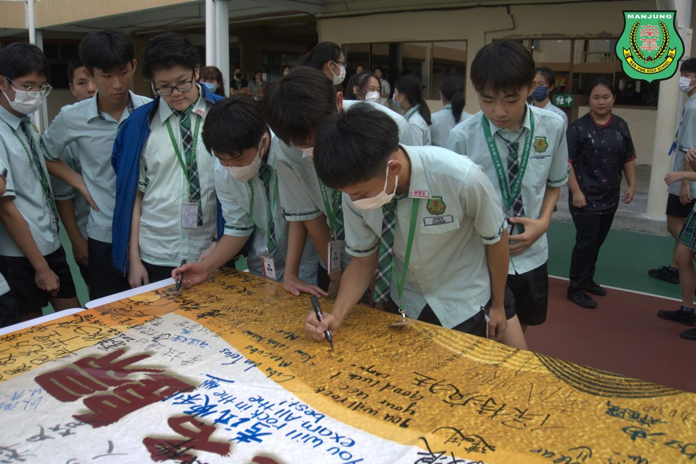
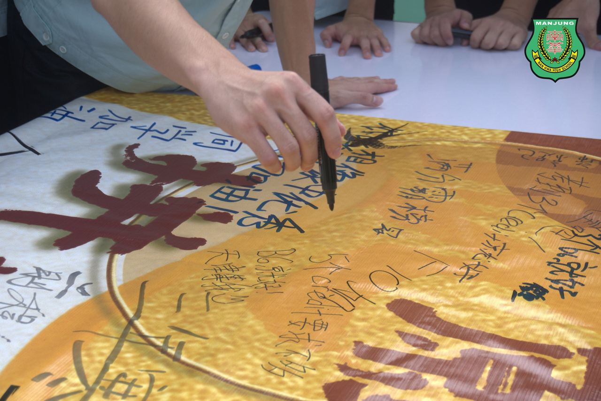

成年礼暨会考祈愿大会
成年礼暨会考祈愿大会
南华独中学生迈向成熟与独立
本校于日前举办了一场庄严而感人至深的成年礼暨会考祈愿大会，除了为初中、高中和SPM会考学生祈福，更为即将步入社会的高三学生进行“加冠受笄”成人礼仪式。这一充满仪式感和温馨的活动汇聚了学校师生、家长和董事的热情，标志着学生们迈入成年、展翅翱翔的里程碑。
在校长陈丽冰博士的带领下，学校举行了会考祈福仪式。在这个仪式中，醒狮团与二十四节令鼓为考生祈愿。师长们写下对会考生的祝福，而学生们则写下自己的会考目标。此外，学生们还在祈愿牌上写下勉励话语，将它们挂在祈愿树上，共同传递着希望和梦想。
成年礼邀请了高三礼生的双亲与长辈出席。奉茶礼中，礼生向长辈敬茶，表达了对家人的感激之情。而加冠受笄礼则象征着成年，礼生的家长为他们系上象征成年的领带与丝巾。现场氛围感人至深，礼生与长辈之间的拥抱充满了感激之情。
在活动中，本校董事总务何添胜先生发表了重要的致辞，他表示，成年礼是人生的重要转折点，标志着学生们从青少年迈向成年。即使离开母校，他们仍然是南华独中的一份子，校董们将继续支持他们的发展。
南华独中校长陈丽冰博士以“十八而立，志达天下”勉励礼生，并以校长身份为全体礼生加持，她鼓励礼生告别幼稚与依赖，迈向成熟与独立，并祝愿他们在未来的道路上不断进步，立志成才。
家联主席叶燕妮在致辞中强调，家庭的支持是孩子们成功的关键。她呼吁在座的各位家长继续关心与支持孩子们，鼓励他们追求梦想，为他们创造一个充满爱和温暖的环境，以便他们能够取得更大的成就。
出席者包括副董事长高级督叶绍利、董事总务何添胜、校长陈丽冰博士、家联主席叶燕妮女士以及理事陈惠芝女士等人。
#成年礼 #会考祈愿大会
#南华独中 #曼绒 #实兆远







